-
Som tidliger - det er ikke længere nok med en webbruger og en tjenestebruger.
-
Hvis man skal have adgang til frie data, er en token nok, men den skal oprettes

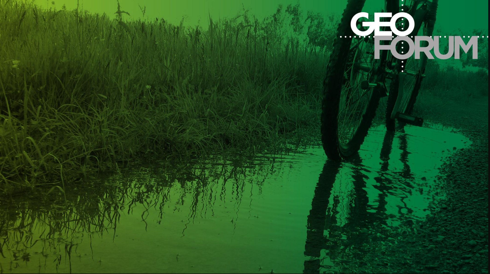
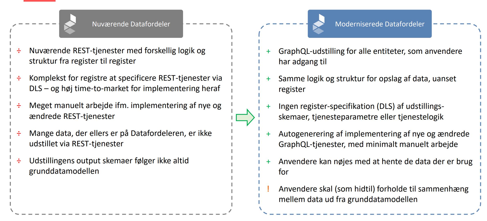
Finansministeriet har i forbindelse med Forslag til finanslov 2026 bevilget budget til paralleldrift på Datafordeleren frem til den 30. juni 2026. Det betyder, at de ikke-moderniserede tjenester skal være udfaset, og at paralleldrift vil ophøre 30. juni 2026.
https://datafordeler.dk/vejledning/modernisering/
Kort repetition på GraphQL
Adgang til den fleksible opslagslogik
Det fleksible schema
Konstruktion af forespørgsler
Eksempler på anvendelse
Kendte begrænsninger
Jeg er ANVENDER på Datafordeleren - mine eksempler og erfaringer er skabt på grund af brug af services.
Jeg kan svare på mange HVORDAN sprøgsmål (men langt fra allle) - og bestemt ikke på HVORFOR spørgsmål.
Et GraphQL-schema definerer de typer og felter, du kan spørge om i API’et.
Schemaet fungerer som:
Et schema består af:
type – definerer objekttyper (f.eks. Adresse, Vejstykke)Query – definerer tilgængelige (læse)operationerquery {
BBR_Bygning( # Entitet
where: { # Standardfiltre
kommunekode: { eq: "0550" }
}
virkningstid: "2024-11-12T14:41:33Z" # Bitemporalt filter
first: 12 # Paging
) {
pageInfo { # Paginginformation
startCursor
endCursor
hasNextPage
hasPreviousPage
}
nodes {
id_lokalId
kommunekode
virkningsaktoer
}
}
}
"data": {
"BBR_Bygning": {
"pageInfo": {
"startCursor": "TURBd01ESTBOMk...d0t6QXdPakF3",
"endCursor": "TURBd01ESTBOMkV0TkdKbFl...NHdNVFl6TVRjd0t6QXdPakF3",
"hasNextPage": true,
"hasPreviousPage": false
},
"nodes": [
{
"id_lokalId": "0000247a-4beb-4e08-8217-d3246a66ffc3",
"kommunekode": "0550",
"virkningsaktoer": "Konvertering2017"
},
{
"id_lokalId": "0000247a-4beb-4e08-8217-d3246a66ffc3",
"kommunekode": "0550",
"virkningsaktoer": "EksterntSystem"
}
]
}
}
}
Som tidliger - det er ikke længere nok med en webbruger og en tjenestebruger.
Hvis man skal have adgang til frie data, er en token nok, men den skal oprettes


Realtioner i grunddataprogrammet
Endpoints
Som text
Som diagrammer
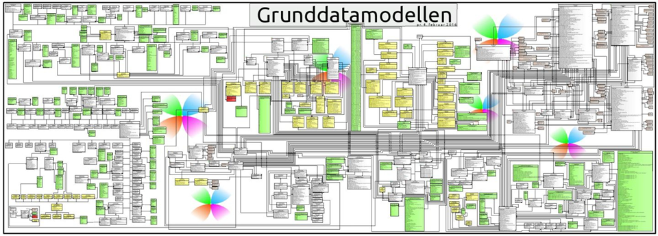
https://www.version2.dk/artikel/fra-cpr-numre-til-vandloeb-dyk-ned-i-den-samlede-model-danske-grunddata
https://confluence.sdfi.dk/pages/viewpage.action?pageId=187105434#GraphQLp%C3%A5Datafordeleren-GraphQL-endepunkter
https://confluence.sdfi.dk/display/DML/Fleksibel+opslagslogik
GraphQL-tjenesterne udstilles gennem URL'er, der følger nedenstående form:
https://graphql.datafordeler.dk/<register>/<version>
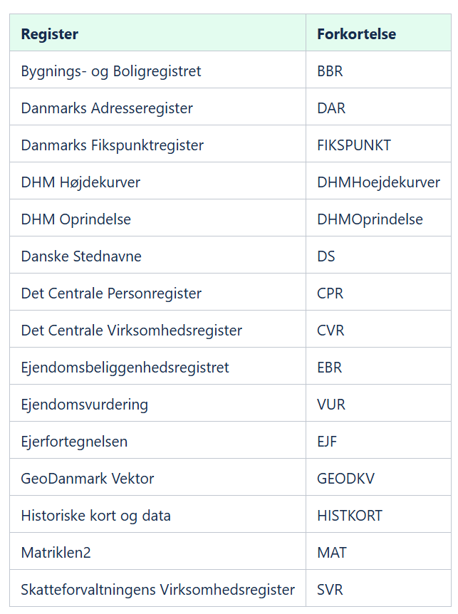
Udgører knap 74.000 linjer - indeholder representation af grunddata som edges, nodes and connections
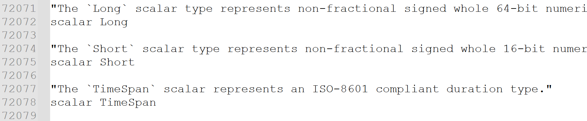
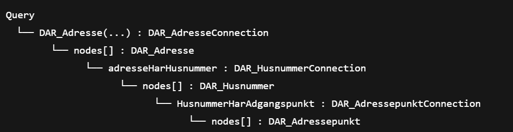
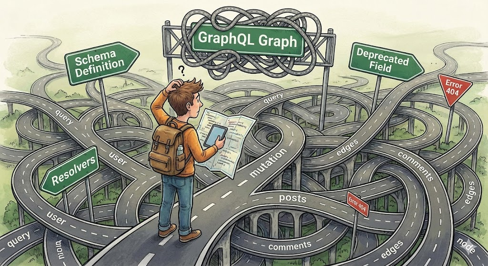
Som når vi navigerer, skal vi tænke vores GraphQL graph som et vejnet.
Hvor starter du ?
Har du stop på vejen ?
Hvor skal du ende ?
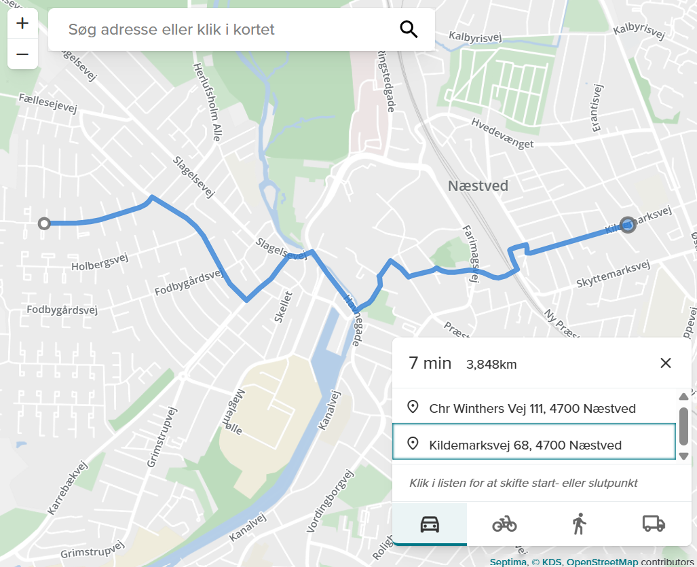
Spørgsmålene kan relateres :
Hvilke data er mit udgangspunkt ?
Hvilke data skal jeg slutte med ?
Er der data 'på vejen' jeg skal bruge ?
For at kunne skabe den forståelse, er en grafisk visning meget nemmere end teksten...
KDS har et webinar den 11/12 med dette specifikke formål - det vil jeg anbefale at man ser.
Modelsekretariatet i KDS afholder et webinar, der giver Indblik i en metode til at identificere og forstå relationer i Grunddatamodellen. Tilmeld dig til webinaret via daf2@kds.dk.
Vises i en browser
Kan navigeres som et webkort
Indeholder al information fra schemaet i et samlet overblik
Lad os se det engang...
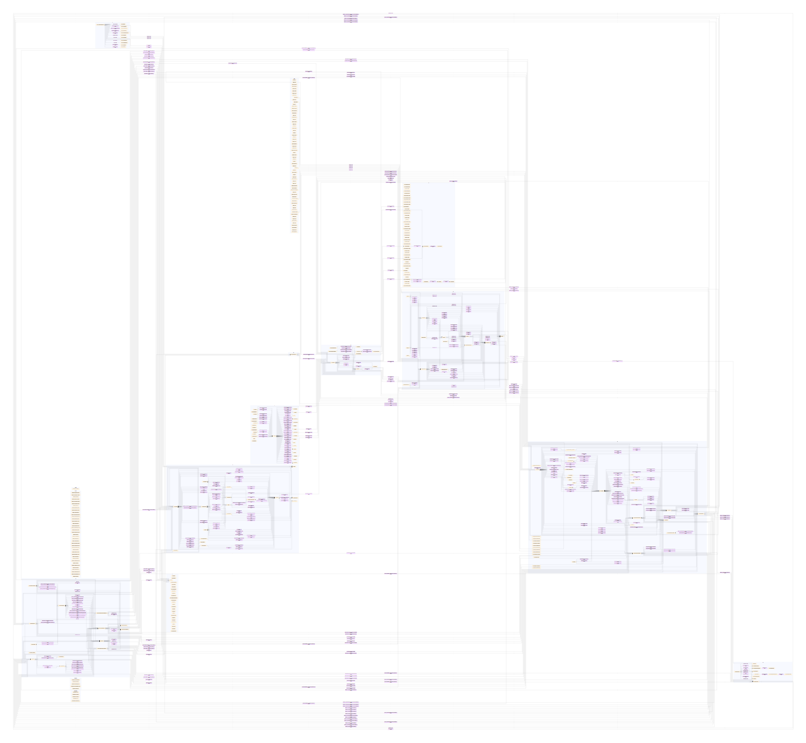
Vi har i Septima forsøgt med at adskille det i registre og tilknyttet farvekodning.
Jvf. det tidligere slide, så skal vi alligevel finde et 'startpunkt' - og det kan man med fordel så bruge de mindre diagrammer til.
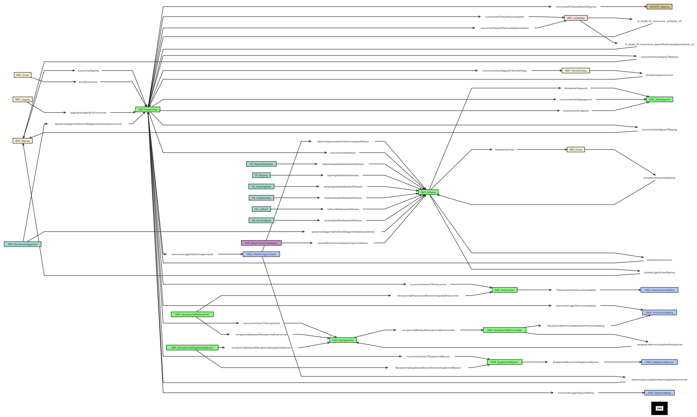
Lad os se lidt på dem...
For mange vil første tanke nok være AI.
Jeg vil med vedlagte graphQL schema gerne bygge en forespørgsel, der tager DAR adressen:
"Lærkevej 7, 2600 Glostrup",
og finder adressens koordinater via adgangspunktet.
Kan du bygge denne forespørgsel for mig?
Sørg for at du læser scheaet grundigt, så der ikke gættes.
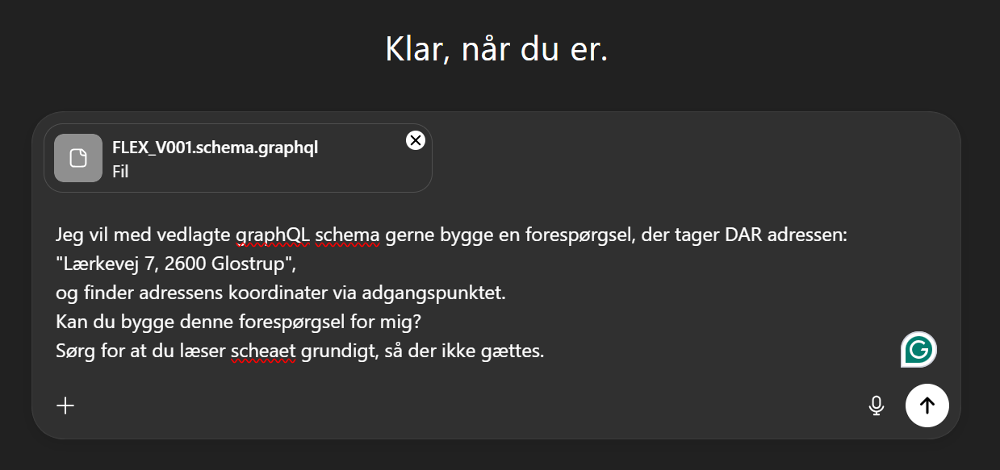
Lad os se hvad der sker...
Den bedste mulighed jeg kender til, er i Postman, hvor man også kan give den schemaet...
Lad os se nogle af 'mine' eksempler
Max 20 joins pr. forespørgsel
Ingen brug af alias'er
Kun en root-node pr. forespørgsel
Github.com/MFuglsang/graphql_datafordeleren
Her er bla. en pdf med en lang række eksempler - langt flere end vi har vist her...